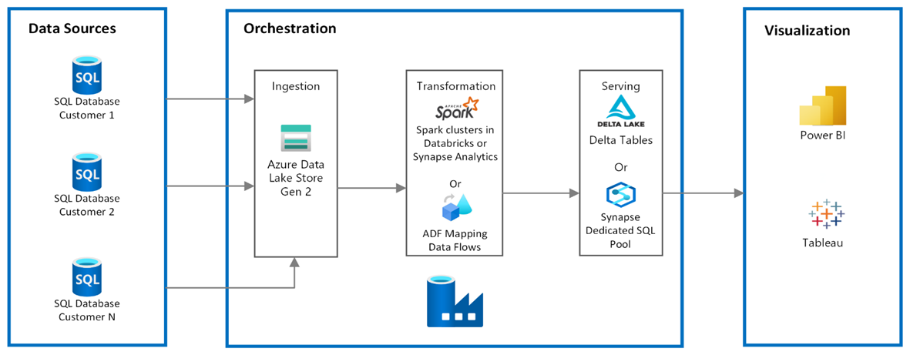

In this project, I sucessfully executed an end-to-end data pipeline with Azure services. Beginning with data ingestion from a local Postgres
database using Azure Data Factory, I moved raw data into the Azure Data Lake Gen2 Bronze container. Subsequently, I used
Azure DataBricks to refine and transform the data within the silver layer, ensuring it was well prepared for further analysis. Further processing steps
in the Silver layer and the final and clean data is stored in the Gold layer for reporting, visualization and advnaced analytics. I integrated Azure Synapse Analytics to connect to the Gold layer,
for analytics, data warehousing and exploration. The last phase o the project involves data visualization and reporting with Power BI, and using Azure Data Factory
to automate my end-to-end data pipeline

This Data Engineering Project simulates an OLTP(Online Transaction Processing) ETL(Extract, Transform, Load) Pipeline, Data is extracted from a csv file in a local folder in
Theia IDE using Apache Airflow DAGS, I combined IBM Cloud DB2(Data Warehouse), Linux, Python and Airflow. Data extracted is a single row which represents a single transaction. Transformation is carried out using python functions to fit our data model,
and data integrity is also checked. After which the current transaction is loaded to a table in IBM Cloud DB2 data warehouse. These tasks were automated using Airflow DAGS for scheduling and monitoring the flow,
and the transactons were scheduled to run every minute.

Introducing a cutting-edge language identification model specifically designed for South African Languages, with an exceptional F1 Score of 0.972, and an accuracy of 0.98. This state-of-the-art machine learning solution accurately detects and classifies diverse languages through text. Leveraging advanced Natural Language Processing techniques and supervised learning algorithms, its proficiency in recognizing linguistic patterns and features unique to each language ensures unparalleled accuracy.

An Image-classifier, that detects the sort of disease afflicting a plant, gives you details of the disease and how to treat it. By simply processing an image of the Plant's leaf using image identification algorithms. Model was created using Tensorflow and was deployed using Streamlit web application Framework.

A movie recommender engine that leverages technology to provide personalized movie recommendations. Built with expertise in machine learning and deployed through an intuitive Streamlit web application, this engine offers seamless and user-friendly experience for movie enthusiasts.
It uses algorithms, analyzes user preferences, viewing history, and demographic information to generate accurate movie suggestions tailored to individual tastes. By considering factors such as genre, director, actors and users ratings.